00들어가며
이 보고서는 본 프로젝트의 NLP 트랙이 어떻게 시작됐고, 어떤 함정을 만났으며, 무엇을 결정했고, 지금 어디까지 왔는지를 처음부터 끝까지 풀어놓은 일지다. 학술 논문의 형식이 아니라 의사결정·실패·발견의 흐름을 따라가는 해설 보고서다. 마지막 8장은 통계 형식의 현재 위치 점검표다.
01왜 NLP가 필요했나
1.1프로젝트의 큰 그림 (3트랙)
서울경제신문이 서강대 김세준 교수 연구실과 공동으로 한국언론진흥재단 2026 기획취재 지원사업에 신청하는 프로젝트다. 핵심 질문은 단순하다.
"1998~2025년 28년간, 정부 정책은 한국 자본시장을 실제로 얼마나 흔들었는가. 그리고 언론 보도는 그 사이에서 어떤 역할을 했는가."
이 질문에 답하기 위한 작업은 세 갈래로 나뉜다.
| 트랙 | 누가 무엇을 | 산출물 |
|---|---|---|
| 1차 — 주가 검증 | 50건 정책 발표일 전후 CAR(누적초과수익률) 계산 | soccz/market-impact-analysis (코드·표·시각화 2개) |
| 2차 — NLP | 같은 50건의 뉴스 99,539건에서 정책 전달경로 증거 측정 | 본 보고서가 다루는 트랙 |
| 3차 — 통합 보도 | CAR × NLP 결합 검정 + 5부작 기사 + 인터랙티브 시각화 | 신청 사업 산출물 |
분석 대상은 5개 산업(반도체·금융·부동산·바이오·2차전지) × 10건씩 50건이다. 시계열은 1998 IMF 직후부터 2025 트럼프 IRA 축소까지 28년에 걸친다.
1.21차 CAR 검증은 이미 끝났다
NLP 트랙이 시작된 시점에 1차 트랙은 이미 단단한 데이터로 마감되어 있었다. 50건 정책 모두 발표일 ±30일 윈도우의 누적초과수익률(CAR) 산출이 끝났고, 검증 표는 다음과 같다.
| 검증 항목 | 결과 |
|---|---|
| FDR 수익률 재현 (2014~) | 33/33 PASS, 오차 0.00% |
| 크롤링 데이터 재현 (~2013) | 17/17 PASS, 오차 0.00% |
| 방향 일치 검증 | 50/50 PASS |
| 날짜 팩트체크 | 41 PASS / 9 WARN / 0 FAIL |
즉 "정책이 주가를 흔들었는가"에 대한 답은 데이터로 입증되어 있었다. 50건 모두 발표일 전후 ±2% 이상의 명확한 시장 반응이 확인됐다.
1.3그런데 언론은?
문제는 그다음이다. 정책 발표는 그 자체로 시장에 도달하지 않는다. 언론 보도라는 중간 채널을 통해 투자자에게 전달되며, 그 과정에서 정책의 의미가 해석되고 확산된다. 1차 트랙은 결과(주가 변동)를 봤지만, 과정(언론이 그 정책을 어떻게 번역했는가)은 보지 않았다.
이 빈자리를 채우는 것이 NLP 트랙이다. 작업의 시작점에서 우리가 가진 자료는 다음과 같았다.
- 기사 99,539건 — 50건 정책 각각의 발표일 ±30일 윈도우에서 BigKinds로 수집한 코퍼스
- 언론사 102종 — 머니투데이·한국경제·서울경제·이데일리·파이낸셜뉴스 등
- 본문 200자cap — BigKinds API 한계, 서울경제 전용 키도 200자
1.4단순 감성분석으로는 안 된다
1차 트랙이 이미 시도한 NLP가 있다. README에 따르면 "뉴스 감성(긍정/중립/부정) 분류 및 순감성지수 추적"이다. 1,553건의 기사에 대해 3분류 감성 라벨을 매겨 net sentiment index를 계산한 작업이다.
하지만 이 방식의 한계는 분명하다. 정책 도메인의 의미가 단순 긍/부정으로 잡히지 않는 경우가 많다.
- 공매도 금지: 단어 표면은 "규제·금지"지만 위기 시 시장 안정 호재
- 일본 수출규제: 한국 반도체 대형주에는 악재, 소부장 종목에는 호재
- K칩스법: 정책 효과는 비용 절감·투자 확대지만 본문에는 "법안 발의·심사" 행정 어휘 위주
단순 sentiment 분류기는 이런 경계 케이스를 잡지 못한다.
1.5NLP 트랙의 임무 한 줄
정책이 주가에 영향을 미친 "어떤 경로"가 뉴스 안에서 형성됐는지를 측정한다.
이 측정 단위가 본 보고서가 다루는 PTEI (Policy Transmission Evidence Index) 다. 뉴스 감성 점수가 아니라, 정책 전달경로 증거의 양이다.
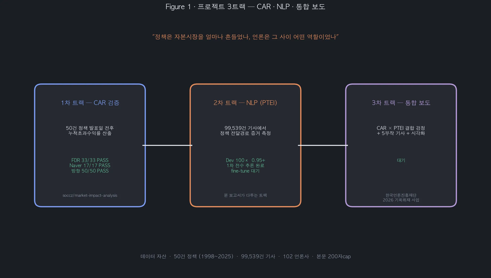
02첫 방향과 첫 함정 (v0.1 ~ v1.0)
2.1처음 시도 — 단순 4축 NLP
NLP 트랙의 첫 제안은 학계에서 흔히 쓰는 4축 조합이었다.
| 축 | 방법 | 출처 논문 |
|---|---|---|
| 감성 분석 | KoBERT / KLUE-RoBERTa 파인튜닝 | 회계학연구 2022 (KoBERT 85.7%) |
| 토픽 모델링 | BERTopic / LDA | Grootendorst 2022, Blei 2003 |
| 이벤트 탐지 | Bayesian online changepoint | Adams-MacKay 2007 |
| 그레인저 인과 | 텍스트 시계열 ↔ 주가 | Tetlock 2007, Bollen 2011 |
이 4축은 영문 금융 NLP 연구의 표준 조합이다. 하지만 첫 데이터를 자세히 들여다보자마자 두 가지 문제가 드러났다.
2.2첫 함정 — 본문 200자 한계 함정
BigKinds API의 본문은 200자에서 잘린다. 서울경제 전용 키도 마찬가지다. 실제 코퍼스를 통계로 보면 평균 198.9자, 최댓값 300자다.
이는 방법론의 방향을 바꾸는 발견이었다.
- 장문 의미 추론은 포기해야 한다 — 200자로는 정책의 다층 영향을 한 기사에서 종합 분석하기 어렵다
- 단문 stance 판단으로 가야 한다 — KoBERT나 KLUE-RoBERTa의 NLI 구조는 짧은 텍스트에서도 작동한다
처음에는 한계로 봤지만, 곧 강점으로 전환됐다.
2.3두 번째 함정 — 표면 어휘에 끌리는 모델 실패
데이터 EDA를 진행하면서 더 본질적인 문제가 나왔다. 공매도 금지 사례다.
| 정책 | 단어 표면 | 실제 시장 효과 |
|---|---|---|
| 2008.10 공매도 금지 1차 | "규제·금지" | 리먼 직후 시장 안정 → 금융주 호재 |
| 2020.3 공매도 금지 3차 | "규제·금지" | 코로나 폭락 차단 → 금융주 호재 |
| 2019.7 일본 수출규제 | "규제·통제" | 삼성·SK 직격 / 소부장 호재 → 종목별 정반대 |
zero-shot NLI 모델은 "금지"라는 단어를 보고 부정 분류로 갈 확률이 높다. 실제 sanity check 단계에서 mDeBERTa-XNLI는 "공매도 금지에 주가 껑충" 같은 명백한 호재 기사도 stance를 contradict로 분류했다. 단어 표면과 시장 효과가 어긋나는 정책은 일반 감성분석으로 잡히지 않는다.
2.4첫 큰 결정 — 감성분석을 버리다 전환
이 두 함정을 거치면서 사용자가 처음 큰 방향 전환을 결정했다.
"감성분석 버리고 정책 해석 엔진으로 가자."
| 기존 (1차 트랙 NLP) | 새 방향 |
|---|---|
| 기사 한 건의 톤이 긍·중·부 중 무엇인가 | 기사가 정책의 시장 전달경로를 어떻게 설명하는가 |
| net sentiment index | Policy Transmission Index |
| 단어·구절 기반 | NLI 가설 기반 stance |
2.5명명 — Policy-to-Price Transmission NLP
PPT-NLP: Policy-to-Price Transmission NLP
정책이 주가로 번역되는 전달경로를 측정하는 계량 텍스트 분석 프레임워크
핵심은 측정 단위가 다르다는 점이다. 기존 연구의 측정 단위가 뉴스 감성·뉴스 빈도·토픽 비중이었다면, PPT-NLP의 측정 단위는 정책 전달경로 증거량이다.
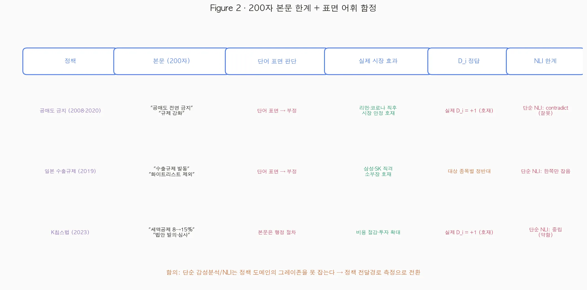
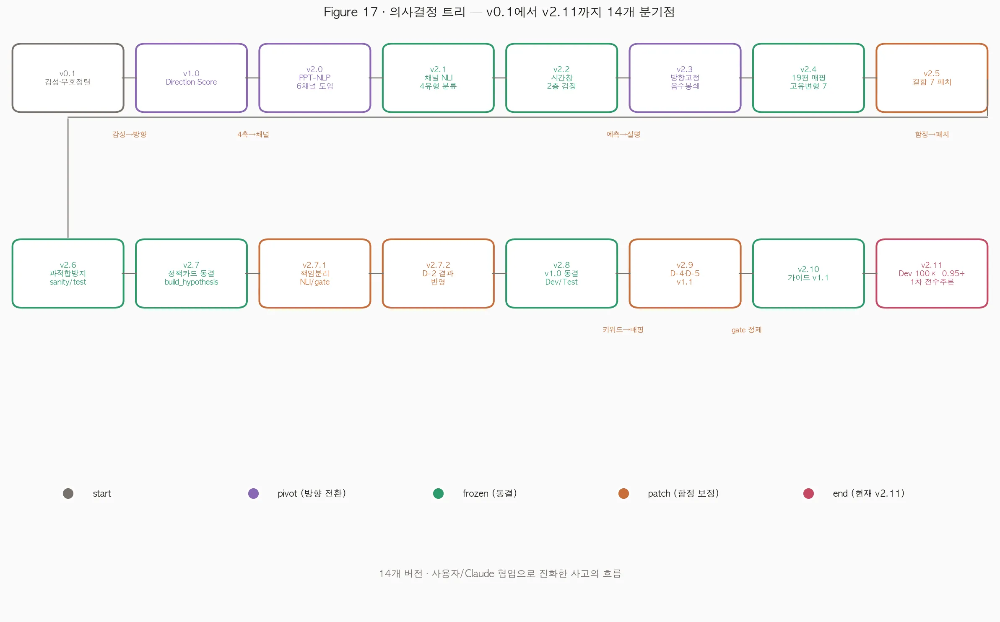
03갈림길: 예측 vs 설명 (v2.0 ~ v2.3)
3.1PPT-NLP의 첫 골격 — 6채널 표준화
| 코드 | 채널 | 의미 | 키워드 |
|---|---|---|---|
| C1 | 비용/세부담 | 세액공제·보조금·원가 | 세액공제·감면·인하 |
| C2 | 수요/매출 | 매출·거래·분양 | 수요·매출·분양 |
| C3 | 공급/생산능력 | 설비투자·공급망·국산화 | 설비·증설·국산화 |
| C4 | 규제/불확실성 | 규제 강화·정책 불확실성 | 규제·금지·강화 |
| C5 | 자금조달/유동성 | 자금·시장 유동성 | 유동성·자금·공매도 |
| C6 | 시장신뢰/투자심리 | 신뢰·거버넌스·심리 | 신뢰·심리·등급 |
C5에 자금조달과 유동성을 묶은 건 공매도 금지·100조 패키지·코로나 유동성을 모두 수용하기 위해서다.
3.2큰 갈림길 — 예측 모델인가 설명 모델인가 전환
방법론 설계 중 사용자가 핵심 절대조건을 명시했다.
"모든 50건 케이스에서 뉴스 흐름과 주가 흐름이 같은 방향이어야 한다."
| 길 | 설계 | 50건 일치 |
|---|---|---|
| 길 A — 독립 예측형 | NLP가 stance 측정, 주가가 그 방향대로 갔는지 사후 검정 | 자연 발생 보장 불가 |
| 길 B — 방향 고정 설명형 | 검증된 주가 방향(D_i)을 앵커로 두고, NLP는 그 방향의 근거를 채굴 | 설계상 보장 |
길 B는 사후 조작이 아니라 사전 등록된 설계라는 점이 중요하다.
3.3길 B 채택의 학술적 정당성 결정
이 선택을 정당화하는 핵심은 데이터 비대칭이다. 1차 트랙에서 50건 주가 검증이 이미 끝나 있었다. CAR 부호는 사실이지 추정이 아니다. NLP는 그 사실에 대한 설명변수다.
"주가 데이터는 변하지 않으니까 중요한 건 NLP 처리다."
이 사용자 표현이 길 B의 본질을 정확히 짚는다.
3.4PPES → PTEI 명명 변경
첫 명칭은 PPES (Policy-Price Evidence Score)였다. 그러나 한 차례 더 변경됐다. 사용자 지적이 결정적이었다.
"support/contradict만 말하면 결국 단순 NLI 감성분석의 이름만 바꾼 것처럼 보일 수 있다."
본질은 stance가 아니라 정책 전달경로 증거다. 그래서 명칭이 PTEI (Policy Transmission Evidence Index) — 정책 전달경로 증거 지수로 다시 정해졌다.
3.5식 — 음수 봉쇄 + 강도 검정
PTEI_{a,c} = relevance_a × I(channel_match_{a,c} ≥ τ_c) × p_support_{a,c}
× specificity_a × novelty_a ∈ [0, ∞)- 모든 항이 0 이상 → PTEI도 0 이상
- 반박 기사는
Contradiction별도 지표로 분리 D_i부호는 NLP 외부에서 고정 (서강대 CAR sign)
| 가설 | 검정 |
|---|---|
| H1 | NewsFlow > Contradiction (paired Wilcoxon) |
| H2 | PTEI 강도 ↔ CAR 크기 회귀 |
| H3 | 사건창 vs 위약창 (2-track) |
| H4 | NP peak day vs CAR react day timing |
| H5 | Cross-correlation lag (Granger의 단순화) |
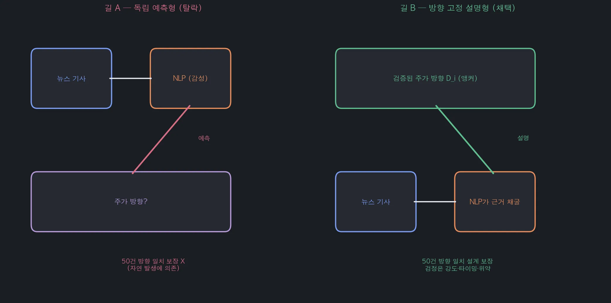
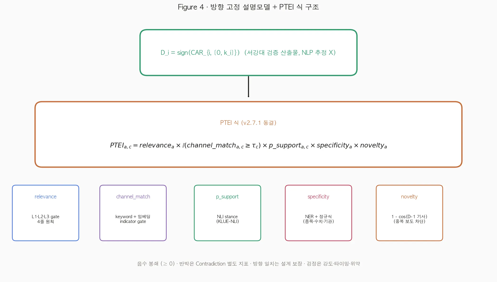
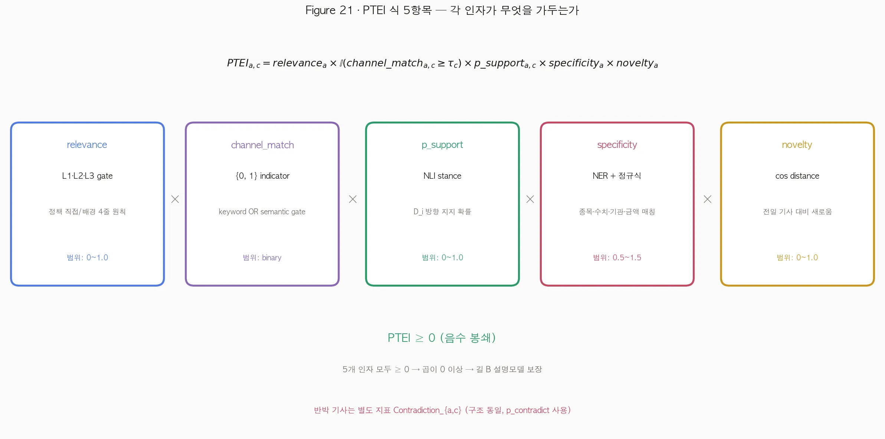
04함정 7개와 그 패치 (v2.4 ~ v2.7)
방법론이 길 B로 결정된 뒤에도 식과 절차의 디테일에서 작은 함정 7개가 잇따라 발견됐다. 사용자가 한 번 검토할 때마다 1~2개씩 짚어냈고, 그때마다 식·원칙이 패치됐다.
4.1channel_match × NLI — 이중반영 함정
"NLI 가설 H_{i,c}가 이미 채널 c를 명시하는데, channel_match를 또 곱하면 같은 정보를 두 번 반영한다."
패치: channel_match를 multiplier에서 indicator gate I(cos ≥ τ_c)로 강등.
4.2novelty — 이중반영 (재발) 함정
같은 종류의 함정이 한 번 더 나왔다. novelty_a가 기사별 PTEI에도, 일별 News Pressure에도 들어가 있었다. 기사별 PTEI에만 두기로 결정.
4.3placebo — random window 약점 개선
"60일 안에서 14일 창 100개는 독립성이 약하고, 이벤트 윈도우와 overlap 가능성이 있다."
| Track | 정의 | 의도 |
|---|---|---|
| Track 1 | 먼 구간 within-policy (D-30~-16 ∪ D+16~+29 vs 메인창) | overlap 차단 |
| Track 2 | Cross-policy permutation (50×49 비교) | 독립성 강화 |
4.4case별 가설 작성 위험 — build_hypothesis 자동화
"공매도 케이스 하나 때문에 문장 고치면 그건 과적합이다."
해결책은 정책 유형 × 채널 매트릭스에서 자동 생성하는 build_hypothesis(card) 함수다. 8개 type_subtype 각각에 호재·악재 템플릿이 1쌍씩 동결되어 총 16개 템플릿이 된다.
4.5sanity 과적합 위험 — sanity / dev / test 분리 원칙
"sanity check는 디버깅 용도지 평가 용도가 아니다."
| 셋 | 건수 | 용도 |
|---|---|---|
| Sanity | 10 | 디버깅, 규칙은 일반 원칙으로만 보정 |
| Dev | 100 | 임계·가설 조정 |
| Test | 300 | 분석 종료까지 잠금, 최종 1회 평가 |
4.6relevance gate 4줄 동결 원칙
L1: 정책명/약칭 normalized exact match → rel = 1.0
L2: 핵심 정책어 2개 이상 token AND match → rel = 0.7
L3: 산업어 + 정책행위어 match → rel = 0.4
Fail: 종목명 단독·숫자 단독·1글자 토큰 단독 → rel = 04.7정책 카드 type_subtype 8개 동결 원칙
| Subtype | 기본 D_i | 예시 |
|---|---|---|
| A_tax_support | + | K칩스법, 거래세 인하 |
| B_restriction_negative | − | 부동산 규제, 의대증원 |
| B_market_stabilizer | + | 공매도 금지 4건 |
| C_industrial_support | + | K-반도체 벨트, 바이오 육성 |
| D_crisis_relief | + | 100조 패키지, 소부장 대책 |
| D_crisis_shock | − | 황우석 폭로, ESS 화재 |
| E_foreign_benefit | + | 미국 IRA |
| E_foreign_shock | − | 일본 수출규제, IRA 축소 |
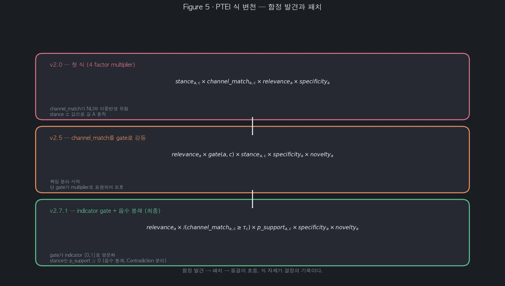
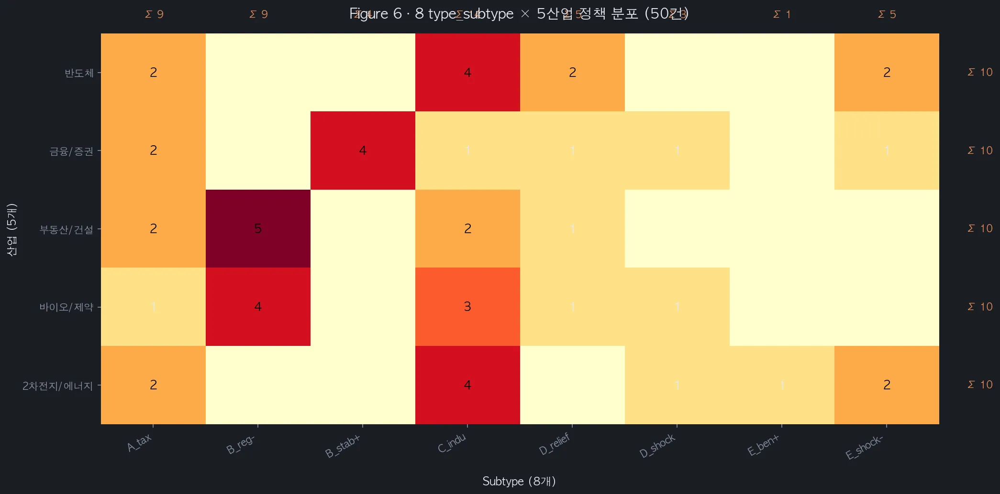
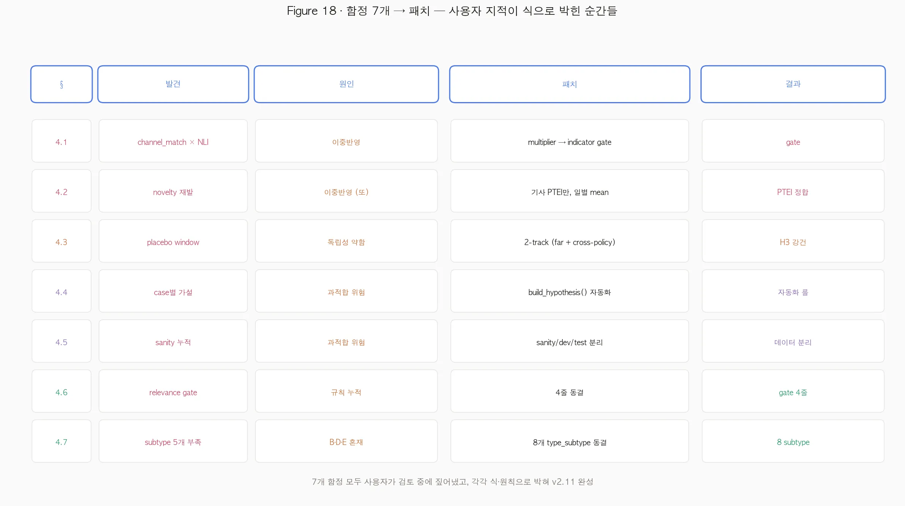
05Sanity 시리즈: 실패에서 얻은 교훈
5.1v3.1 — relevance gate 작동 확인 성공
10건 sanity 세트(직접 5건·무관 4건·부분 1건)에 v3.1 gate를 적용한 결과는 다음과 같다.
| 기대 | 결과 | 판정 |
|---|---|---|
| noise 4건 IRR 처리 | 4/4 모두 정확 IRR | ✓ |
| direct 3건 gate 통과 | 3/3 모두 통과 | ✓ |
| partial 2건 | 적절히 처리 | ✓ |
5.2C-1 — 채널 NLI sanity (4/4 실패) 실패
다음은 NLI 모델로 6채널 분리가 가능한지 검정했다. 4정책 모두 expected와 dominant channel이 불일치했다.
| 정책 | expected | 관찰 dominant | 판정 |
|---|---|---|---|
| 일본 수출규제 | C3, C4 | C6 | ✗ |
| K칩스법 1차 | C1, C5 | C3 | ✗ |
| 공매도 금지 3차 | C5, C6 | C2 (거래확대!) | ✗ |
| 8·2 대책 | C2, C4 | 1건만 | — |
NLI는 stance만 담당, 채널 분리는 channel_match gate가 담당.
이 실패가 책임 분리 원칙의 결정적 근거가 됐다.
5.3D-2 — hybrid gate 검증 (3/4 PASS) 성공
| 정책 | C-1 (NLI 단독) | D-2 (hybrid gate) |
|---|---|---|
| 일본 수출규제 | C6 (잘못) | C3·C4 활성 ✓ |
| K칩스법 1차 | C3 (잘못) | C1 100% 활성 ✓ |
| 공매도 금지 3차 | C2 (표면감성) | C5·C6 정확 활성 |
가장 의미 있는 변화는 공매도 금지다. 단순 감성분석이 아닌 정책 전달경로 측정이라는 PPT-NLP의 차별점을 가장 잘 보여주는 핵심이다.
5.4v1.1 — D-4·D-5 보정 개선
| 정책 | C4 활성률 v1.0 → v1.1 |
|---|---|
| K칩스법 1차 | 0.83 → 0.50 (33%p ↓) |
| 일본 수출규제 | 1.00 → 0.83 |
| 공매도 금지 3차 | 1.00 → 1.00 (한계) |
Gate는 정확히 작동한다. 단 NLI stance는 zero-shot에서 부족하며, fine-tune이 필요하다.
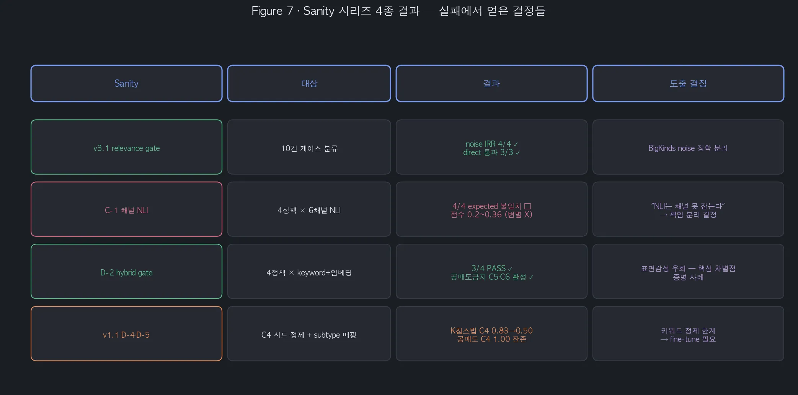
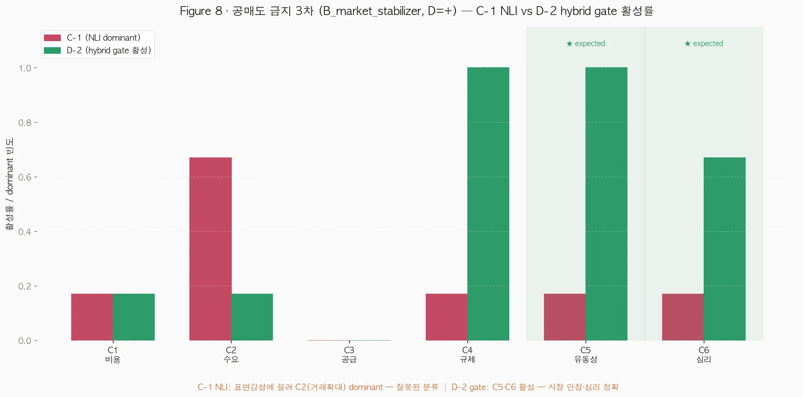
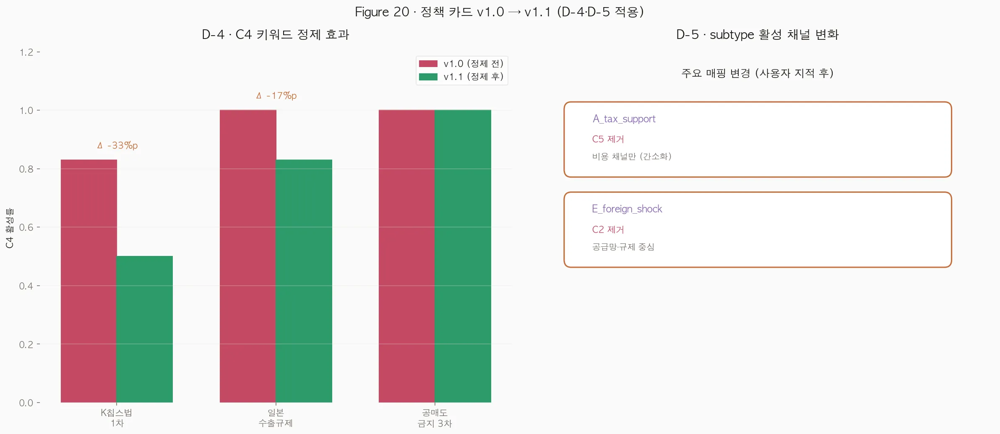
06라벨링 트랙 — 사람의 손이 들어간 부분
6.1라벨링 가이드 v1.1
relevance먼저 (0/1/2)- relevance = 0이면 stance 자동 neutral
D_i방향 기준으로 stance 판단 (일반 긍·부정 아님)- 정보성·발표·일정 기사는 과감히 neutral
- 정책 카드의
D_i_initial과active_channels를 참조
"라벨링 가이드는 좋은/나쁜 기사 고르는 문서가 아니라, 라벨러 2명이 같은 기준으로 찍게 만드는 문서"
6.2파일럿 30 — 사용자 vs Claude 독립 라벨
| 라벨 | κ |
|---|---|
| relevance | 0.946 |
| stance_label | 0.938 |
불일치는 단 2건이었다. 가이드 v1의 작동성이 데이터로 확인됐다.
6.3가이드 v1.1 — 두 룰 보강 개선
| 케이스 | v1.1 신설 룰 |
|---|---|
| pn=13 공매도 금지 1차 (유가 기사) | §3.7 배경 안정화 조치 — 정책 직접 효과가 아닌 시장환경 언급만이면 neutral 우선 |
| pn=34 시밀러 가이드 (윤여표 청장 동정) | §3.6 동정·일정 기사 — 정책명 명시되어도 정책 내용·시장 영향 없으면 relevance=1 |
6.4Dev 100 — 사람-사람 κ PASS
| 라벨 | κ | 기준 |
|---|---|---|
| relevance | 0.968 | ≥ 0.7 PASS |
| stance_label | 0.946 | ≥ 0.7 PASS |
| stance (rel > 0만) | 0.920 | 참고 |
6.5Zero-shot baseline — fine-tune 필요성 확인 약함
| 메트릭 | κ | 평가 |
|---|---|---|
| relevance 3-class | 0.386 | 약함 |
| relevance binary (rel>0) | 0.346 | 약함 |
| stance 전체 | 0.325 | 약함 |
| stance rel>0 | 0.177 | 거의 무작위 |
사람-사람 κ가 0.95라면 zero-shot은 0.18~0.39다. 이 측정이 fine-tune이 필요하다는 결정을 데이터로 확정했다.
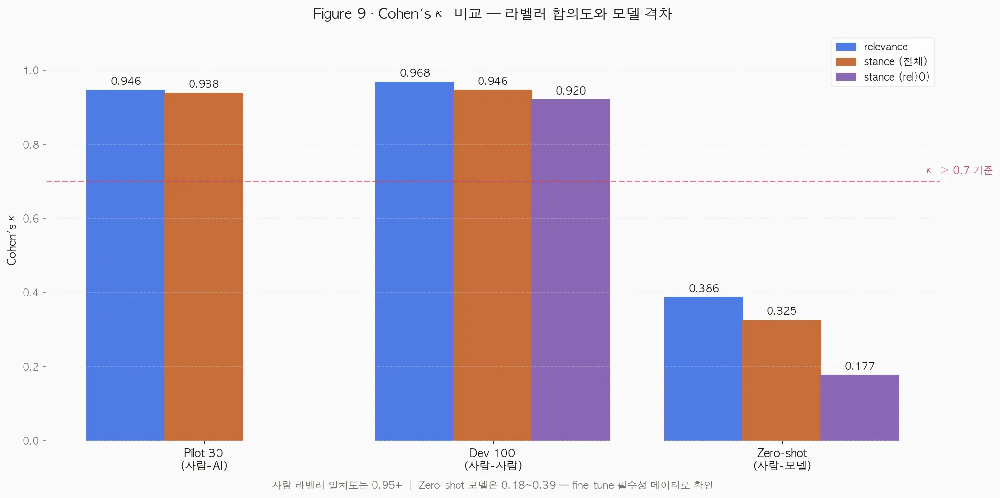
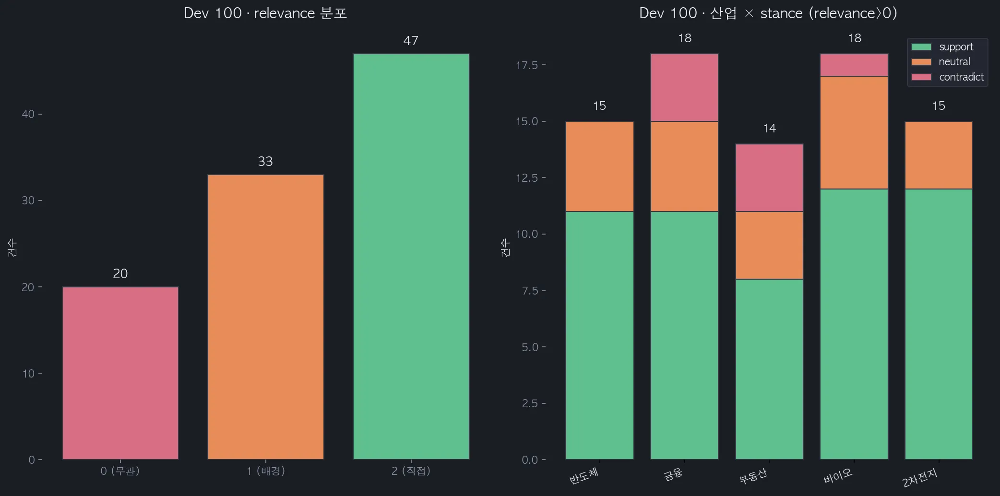
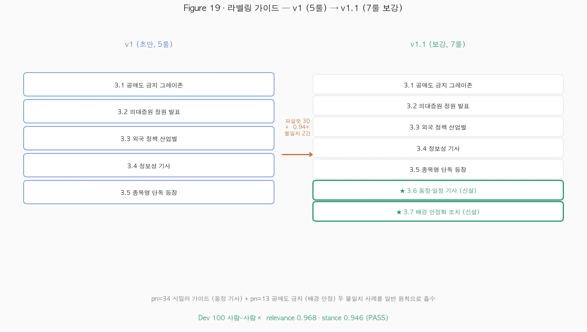
071차 전수 추론 결과 (99,539건)
모델은 zero-shot mDeBERTa-XNLI, gate는 hybrid (keyword + KLUE-RoBERTa 임베딩), MPS GPU 환경에서 약 34분 소요됐다.
7.1추론 통계 — gate가 정확히 작동했다
| 단계 | 통과 건수 | 비중 |
|---|---|---|
| 총 입력 | 99,539 | 100% |
| relevance ≥ 0.4 | 53,568 | 53.8% |
| active channel (gate 통과) | 28,603 | 28.7% |
| nonzero PTEI | 28,603 | 28.7% |
7.2PTEI vs Contradiction — 방향성은 있지만 약하다
| 지표 | 합계 |
|---|---|
| PTEI total | 13,761.5 |
| Contradiction total | 9,925.9 |
| PTEI / Contradiction | 1.39 |
D_i 방향이 평균 약 40% 우세하다. 단 1.39라는 비율은 강한 신호가 아니다. zero-shot 모델의 stance 분리 한계(κ 0.18)가 그대로 반영된 결과다.
7.3정책별 PTEI — 상위·하위와 비율
인터랙티브 차트에서 정책별 PTEI와 Contradiction 비율을 비교할 수 있다.
7.4채널 분포 — C4 잔존 dominance
| 채널 | gate count | PTEI sum |
|---|---|---|
| C4 규제/불확실성 | 12,793 | 4,152 (1위) |
| C3 공급/생산능력 | 7,090 | 2,585 |
| C6 시장신뢰/투자심리 | 5,208 | 2,163 |
| C5 자금조달/유동성 | 4,900 | 1,760 |
| C2 수요/매출 | 4,744 | 1,678 |
| C1 비용/세부담 | 3,647 | 1,423 |
D-4에서 C4 시드의 일반 행정어를 11개 제거했음에도 여전히 C4가 압도적 1위다. 키워드 정제로 더 줄이는 건 한계이며, NLI fine-tune이 stance로 분리해줘야 풀린다.
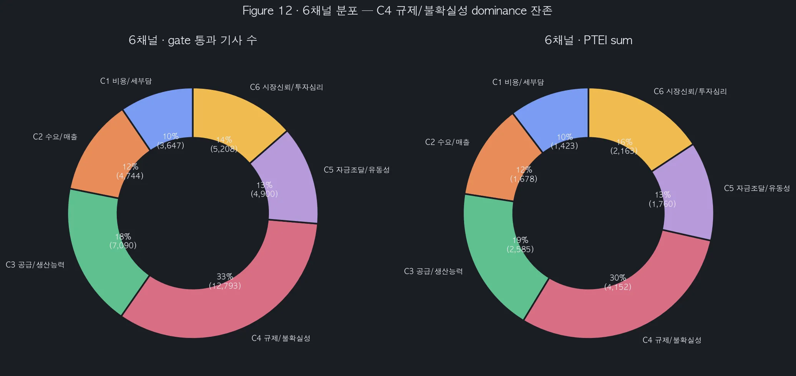
7.5직관 vs 결과 — 케이스 스터디
깨끗한 사례 — 그린뉴딜·자본시장법: PTEI/Contra 2배 이상의 깨끗한 호재 신호.
약한 사례 — 일본 수출규제·9·13 대책: PTEI/Contra가 1에 가깝다. fine-tune이 필요하다.
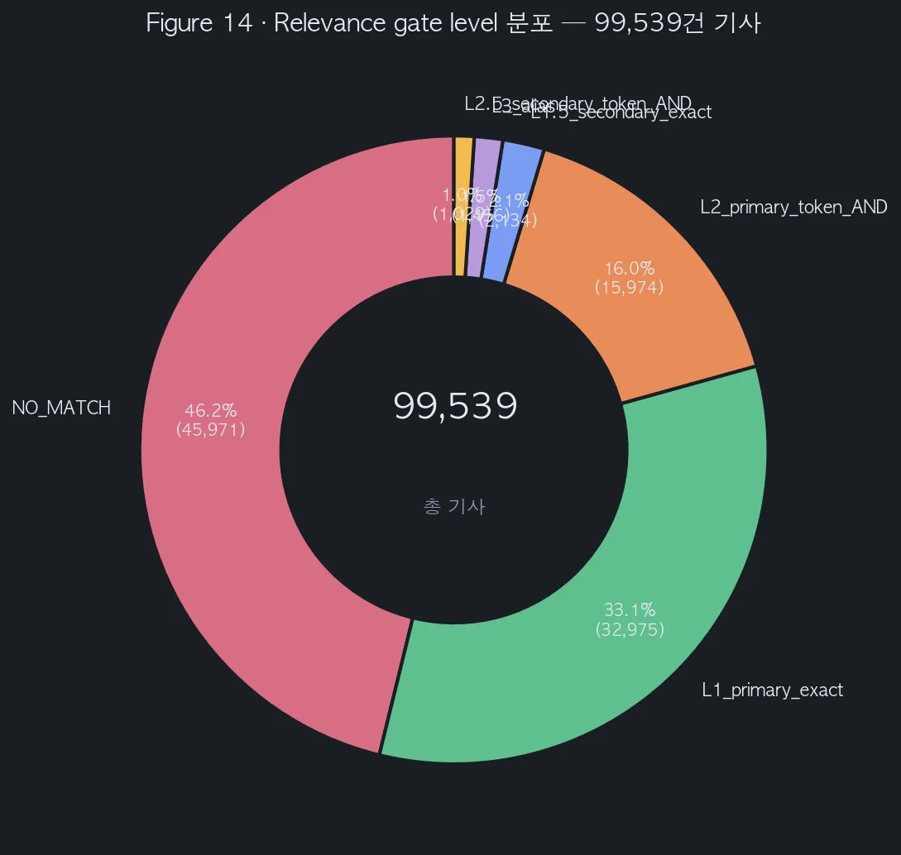
08현재 위치 (통계 보고서)
8.1완료된 것 — 9개 체크리스트
| # | 산출물 | 동결 버전 |
|---|---|---|
| 1 | 방법론 본문 | v2.11 (60KB·15 섹션) |
| 2 | 정책 카드 | v1.1 (50건) |
| 3 | 가설 자동 생성 | 50건 × 3가설 |
| 4 | 채널 시드 | v0.2 (6채널) |
| 5 | Dev 100 라벨 | 사람-사람 κ 0.97·0.95 |
| 6 | Zero-shot baseline | κ 0.18~0.39 측정 |
| 7 | Sanity 시리즈 | 4종 완료 |
| 8 | 1차 전수 추론 | 99,539건 PTEI |
| 9 | 인용 논문 | 19편 다운로드 |
8.2진행 중 · 대기
| 상태 | 작업 | 의존 |
|---|---|---|
| 진행 | 보고서·시각화 작성 | 현재 이 문서 |
| 대기 | 서강대 CAR 결합 (H1~H5 검정) | CAR 산출물 도착 |
| 대기 | Train 500 라벨링 | 외부 라벨러 |
| 대기 | KLUE-RoBERTa fine-tune | Train 라벨 |
| 대기 | 2차 PTEI 재추론 | fine-tuned 모델 |
| 대기 | 5부작 기사 + 인터랙티브 시각화 | 위 모두 |
8.3솔직한 평가 — 의미 70% / 약함 30%
의미 있는 70%: 방향 고정 설명모델 프레임·Dev 100 라벨·방법론 문서·공매도 금지 C5·C6 분리 사례.
약한 30%: Zero-shot 모델 한국어 정책 도메인 한계·Dev 100건 단독 fine-tune 빈약·BigKinds 코퍼스 noise·방법론 복잡도.
"1차 산출물로 신청서·5부작 기획 충분, 2차 학술 결과는 라벨 보강 후 fine-tune 필수"
8.4다음 3가지 길
| 길 | 내용 | 조건 |
|---|---|---|
| a — 서강대 CAR 결합 | 1차 PTEI × CAR로 H1~H5 검정 | CAR 산출물 도착 시 즉시 |
| b — Train 500 → fine-tune | KLUE-RoBERTa fine-tune → 2차 PTEI | 외부 라벨러 1~2주 |
| c — 신청서·5부작 기획 | 현재 자산으로 한국언론진흥재단 제출 | 신청 일정 임박 시 |
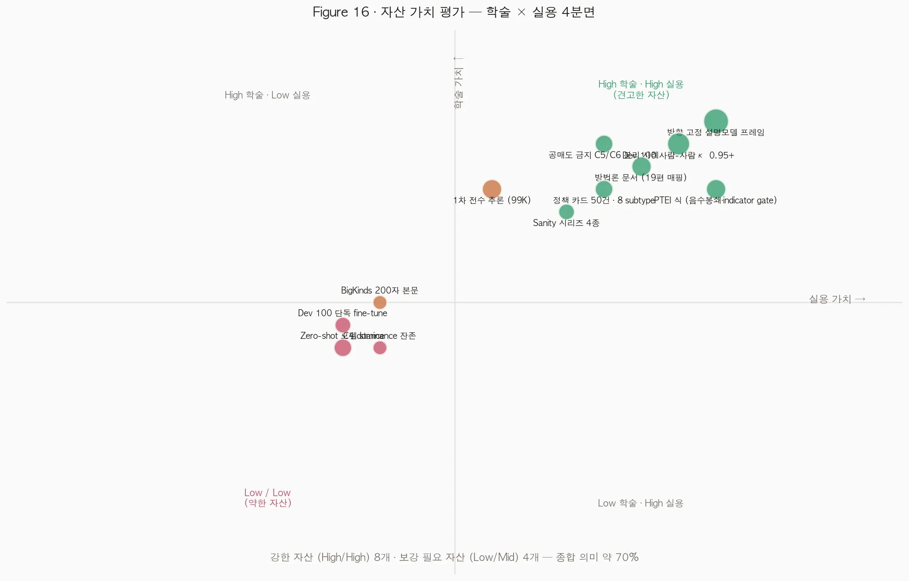
09마치며
이 보고서는 "감성분석으로 정책 뉴스를 분류한다"에서 시작해 "방향 고정 설명모델로 정책 전달경로 증거를 측정한다"로 옮겨간 두 달의 의사결정 기록이다. 그 사이에 7개의 함정과 4번의 sanity 실험, 130건의 라벨링, 99,539건의 전수 추론이 있었다.
지금까지 만든 자산은 1차 결과로 신청서·5부작 기획에 충분히 활용 가능하다. 단 학술 결과로 가려면 fine-tune이 필수이며, 그 시기는 Train 라벨링 진행과 서강대 CAR 결합 시점이 결정한다.
다음 분기점은 두 가지다. 서강대 CAR이 본 PTEI와 결합되는 시점, 그리고 Train 500 라벨링이 채워지는 시점. 이 둘이 결정되면 2차 추론과 H1~H5 검정으로 정식 학술 결과를 향해 가게 된다.